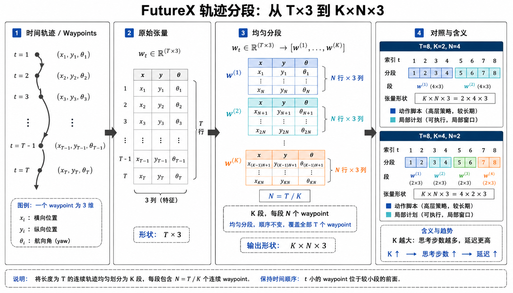
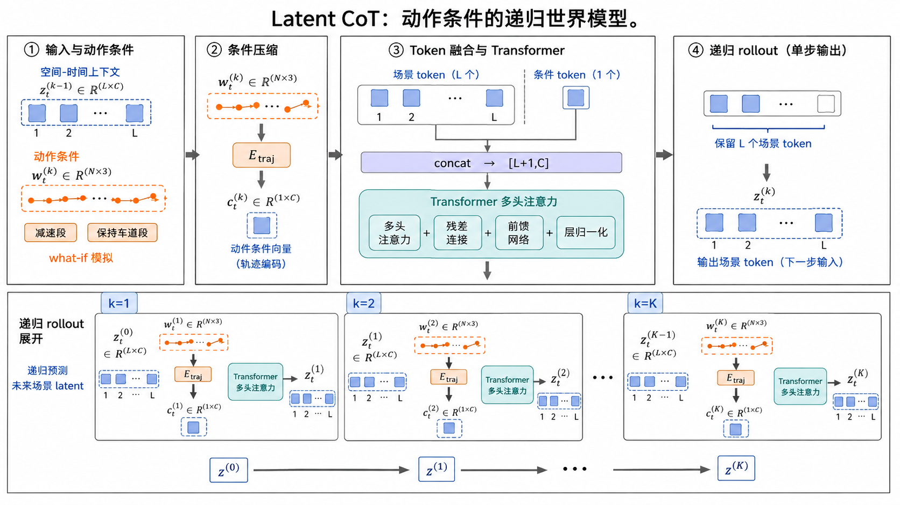
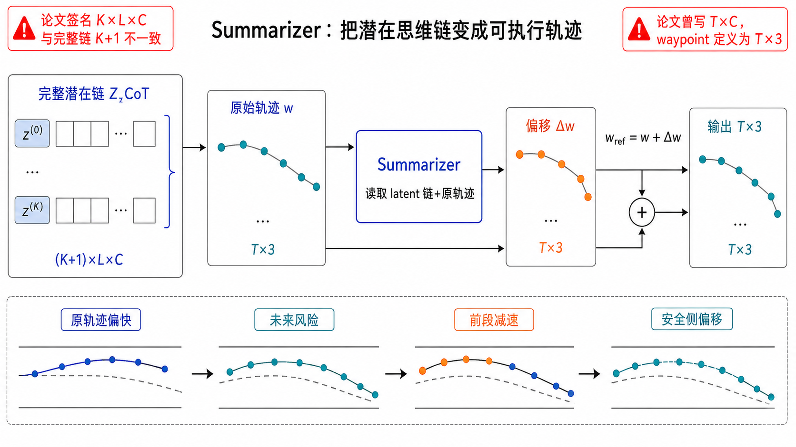
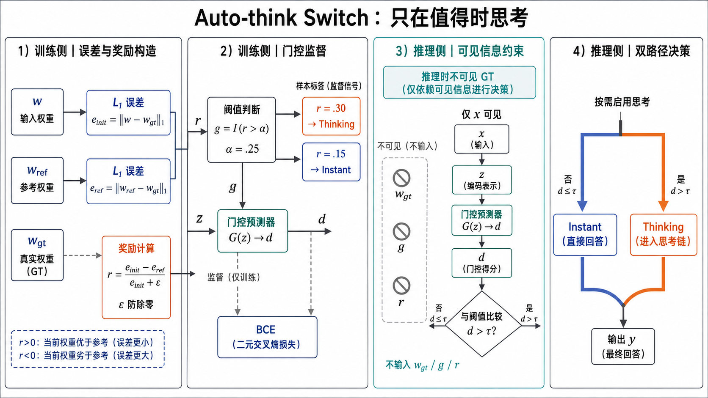
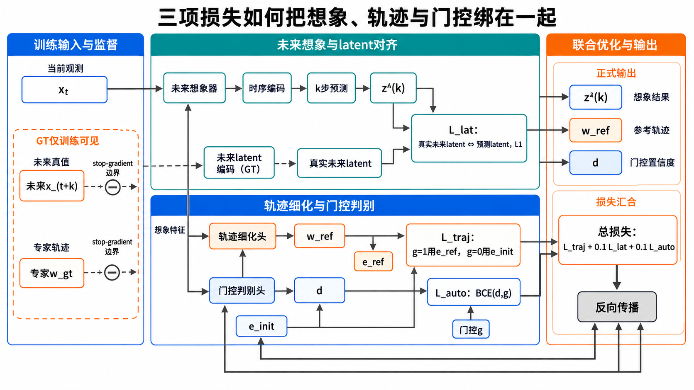
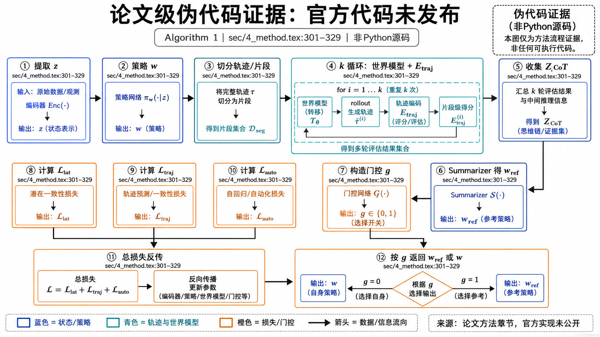
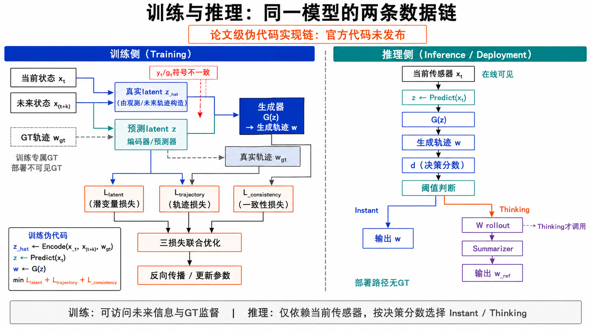
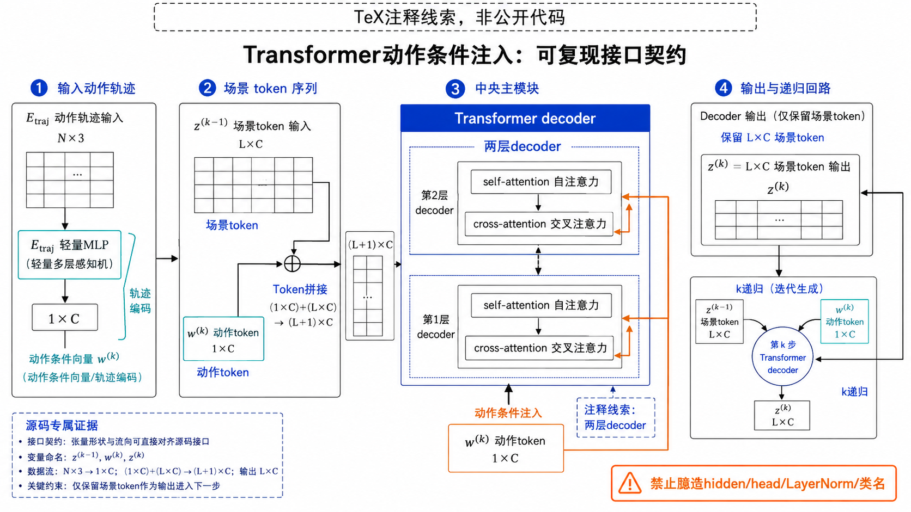
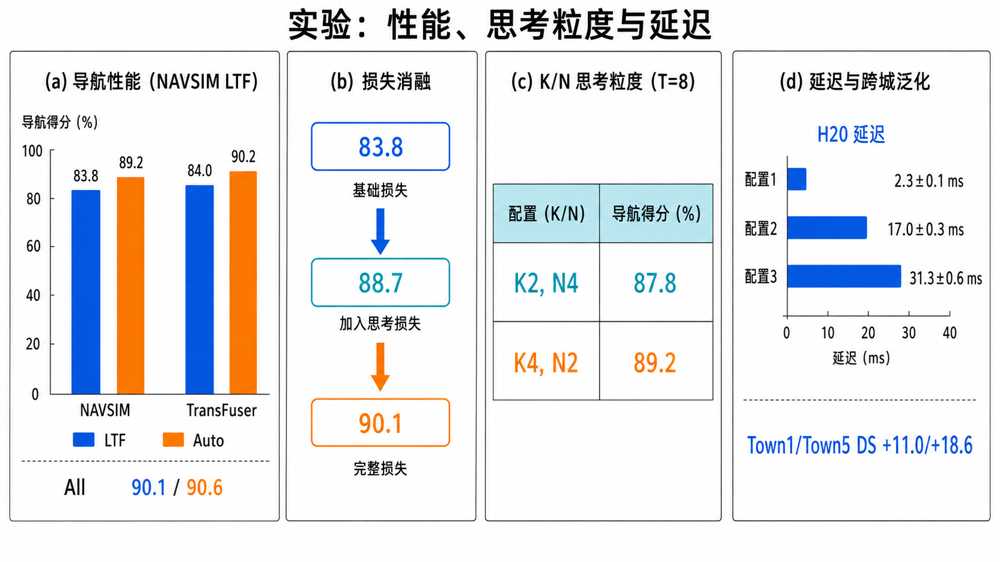

FutureX：潜在 Chain-of-Thought 世界模型如何让端到端驾驶“先想一步再开”
0. 先建立阅读地图：这篇论文真正改变了什么
端到端驾驶通常完成一次 sensor → latent → trajectory 前馈映射。它的优势是快，但它把“如果我现在刹车，几秒后前车会怎样；如果我换道，盲区车辆会不会进入冲突区”压缩成一次决策。FutureX 的关键不是再堆一个预测头，而是把动作本身作为世界模型的条件，让模型在内部执行一串可微的 what-if 操作：轨迹的第一小段改变潜在场景，改变后的场景再接受下一小段动作。这样，思考不是额外的自然语言，而是状态演化链。
全部细节
本图已通过当前任务原生 ImageGen 验收：image_id=futurex_fig01_overview；call_id=ig_045993b9e911276a016a9928af39ec87d0acdb5e2990b61d65；尺寸=1672×941；SHA-256=63A5F0548C5263F2031C6E5D28248A2AF4BCBE5B4D0380E3035F580E588980C；状态=embedded。
图中左侧应明确区分原始传感器 xt、场景编码器输出 zt∈RL×C 与策略 π 产生的 T×3 轨迹。中部上方是 Auto-think Switch，输出 dt∈[0,1]；下方是 K 次 Latent World Model rollout，每次接收一个 N×3 轨迹段并输出新的 L×C latent。右侧 Summarizer 读取 {z(0),…,z(K)} 和原轨迹，输出 offset 修正后的 wref。图中图中已标注 Instant 直接输出 w、Thinking 输出 wref，并用不同颜色标出训练时的 GT 监督路径与推理时不可见的标签构造路径。
1. 背景与问题定义：为什么“只看当前 latent”会失败
论文将现有 E2E 系统的局限归结为时间闭环缺失。当前 latent 只描述观测时刻的世界，而交通场景具有反应性：自车的加速、刹车和横向偏移会改变其他交通参与者的相对位置。一个在当前帧看似安全的轨迹，可能在未来两个采样点与倒车车辆、突然出现的行人或对向车形成冲突。传统视觉扩散世界模型可以生成未来图像，但高分辨率像素预测开销大；LAW、World4Drive 等 latent world model 更高效，却没有把“分步思考”与轨迹修正连成统一的 CoT 过程。
FutureX 的问题定义可以写成：给定传感器输入 xt，学习一个策略，在不牺牲简单场景延迟的前提下，仅对需要时进行 K 步潜在预测，并输出更接近专家轨迹的动作。注意这不是搜索一棵动作树；论文只沿初始策略给出的单条候选轨迹分段滚动，因此计算量与 K 线性相关。
2. 机制一：初始轨迹提议是“思考”的锚点
场景编码器将多模态输入映射为 token 序列 zt。策略网络 π 先给出一条完整计划：
每个 waypoint wi=(xi,yi,θi) 位于当前 ego 坐标系，既包含位置又包含朝向。它不是最终答案，而是供世界模型反事实模拟的“动作脚本”。这一步有一个容易忽略的设计含义：FutureX 不从零生成第二条轨迹，而是在已有 backbone 的输出上做增量修正，因此可以复用 LTF 或 TransFuser 的感知与策略能力。

全部细节
本图已通过当前任务原生 ImageGen 验收：image_id=futurex_fig02_segment；call_id=ig_042396d05981482d016a992a03d20087d096ed4ab2284e2ca1；尺寸=1660×948；SHA-256=F5BC120A28797BCE520EAED27EE54B9613322BA2C71239955893D2D4E7954155；状态=embedded。
左侧显示 T 个 waypoint 的时间序列，每个点标出 (x,y,θ)。中部用括号将序列均匀切成 w(1)…w(K)，每段 N=T/K 个点；右侧给出形状 w∈RT×3→RK×N×3。必须在图中放一个 NAVSIM 例子：T=8、K=4 时 N=2，每段包含相邻两个 waypoint；另放一个对照：K=2 时 N=4。用注释说明 K 越大，思维步数越多、每步动作粒度越细、延迟越高。
3. 机制二：Latent CoT 是动作条件的递归世界模型
FutureX 将轨迹均匀切分：
令 zt(0)=zt。第 k 步世界模型接收上一步场景状态和当前局部动作：
直观上，z(1)表示“执行第一小段之后我想象中的场景”，z(2)表示再执行第二小段后的场景。整个思维链为：
这里的 CoT 与语言模型的 token-by-token 生成有结构上的相似性，但语义不同：语言模型的 thought 是文本 token，FutureX 的 thought 是由动作条件化的场景 token。每一步都保留空间-时间上下文，因此可以表达“前车继续倒车、我减速后冲突消失”这类状态转移，而不需要先把场景翻译成语言。
3.1 世界模型内部：动作段如何注入 Transformer
论文正文给出的实现契约是：轨迹编码器 Etraj:RN×3→R1×C 将动作段压成一个与 latent 通道维一致的动作 token ct(k)，然后与 zt(k−1) 沿序列维拼接，形成 (L+1)×C 输入，经 Transformer 多头自注意力得到新的 L×C latent。其作用不是把动作简单相加，而是让动作 token 与场景 token 发生全局注意力交互。
上面是对 sec/4_method.tex:44–72 的形状化改写，不是仓库中的可运行代码。TeX 注释另提到“两层 Transformer decoder、轻量 MLP 轨迹编码和 cross-attention”，但注释不等于公开实现，报告将其作为待复现线索而非事实代码。

全部细节
本图已通过当前任务原生 ImageGen 验收：image_id=futurex_fig03_rollout；call_id=ig_06a731b6aeb0f842016a992af8949887d1a344096f156bbb5d；尺寸=1672×941；SHA-256=4E22E30D25C92DAD17538C0B4FE9A060800B3137E3E4F166BEC7DCFBA982A7BF；状态=embedded。
图应分成四个逻辑区：输入 latent token 序列、Etraj 动作编码、Transformer 自注意力融合、递归输出。每个 k 步都显示 z(k−1)[L,C] 与 c(k)[1,C] 拼成 [L+1,C]，并画出只保留前 L 个场景 token 的更新。至少展示 k=1、k=2、k=K 三个状态，标注“动作条件”“空间-时间上下文”“想象未来”。右下角用小例子说明：w(1) 为减速段，z(1) 中前车距离相关 token 被更新；w(2) 为保持车道段，z(2) 继续传播该风险。不得把它画成像素生成器或独立动作树。
4. 机制三：Summarizer 把整条思维链折回一条可执行轨迹
滚动得到的 ZCoT 仍然是内部表示，车辆不能直接执行 latent。Summarizer S 同时读取 ZCoT 和原始 wt，输出 wtref：
论文明确说明 S 预测的是初始轨迹的 offset。换句话说，模型学习的是“未来信息应该如何改变当前计划”，而不是要求 summarizer 独立重建全局轨迹。该残差式接口有两个好处：第一，初始轨迹已经满足基本运动学和道路先验，修正头只需处理风险相关偏差；第二，Thinking 失败时仍有 wt 可作为退化路径。
一个具体场景是停满车辆的窄路：当前相机帧可能看不到行人，但 rollout 在前进动作条件下得到的未来 latent 会编码“车辆间隙即将暴露”的风险，Summarizer 于是输出更保守的速度和横向偏移。这个解释是论文给出的机制示例，不意味着模型显式检测了“行人”文本标签。

全部细节
本图已通过当前任务原生 ImageGen 验收：image_id=futurex_fig04_summarizer；call_id=ig_08160d01778a4bf1016a9932db379487d0abd6c1393758e378；尺寸=1672×941；SHA-256=BAE9652EC700C74C6D2F1FCEB70C15865408E63659015F5A8F4A9C9322C0DA13；状态=embedded。
图左侧排列 z(0…K) 的多步 latent，中央显示与原始 w 拼接或交叉注意力，右侧分为“offset head”和“refined trajectory”。图中已标注输入输出形状：完整链 Z∈R(K+1)×L×C（论文签名写 K×L×C，存在记号冲突）、w∈RK×N×3、输出 T×3。用一条虚线表示原始轨迹，实线表示修正后轨迹，局部放大一个窄路/停车车辆案例：原轨迹速度偏快，修正 offset 让前段减速并略向安全侧偏移。图中图中未虚构网络层数。
5. 机制四：Auto-think Switch 用“修正收益”学习何时思考
额外 rollout 有成本，所以 FutureX 不把所有场景都强制设为 Thinking。门控 G 从当前 latent 预测难度分数：
训练标签不是人工写的“困难/简单”，而是比较初始轨迹和修正轨迹相对于专家轨迹的 L1 误差：
例如 einit=10、eref=7、α=0.25，则 r=0.3，样本进入 Thinking；若 eref=8.5，则 r=0.15，样本标为 Instant。这个标签只在训练阶段借助 GT 构造，部署时 G 只能依赖 zt 预测 dt。论文实验中 Auto 模式在 LTF 和 TransFuser 上分别有 24.5% 和 13.7% 场景走 Instant，说明门控确实跳过了一部分不需要额外推理的帧。

全部细节
本图已通过当前任务原生 ImageGen 验收：image_id=futurex_fig05_switch；call_id=ig_082cd84637bef956016a992c94d60887d08bb73b4339bfb915；尺寸=1672×941；SHA-256=AA309EE52C143690277FFAEB8ABE267F0DF92D731BE49B7F2FC1E1E8A43902D3；状态=embedded。
图中必须同时呈现训练和推理两条路径。训练侧从 w、wref 与 wgt 计算 einit、eref、r 和 g，再用 BCE 训练 G；推理侧只允许 x→z→d→阈值→Instant/Thinking。图中已标注 ε 的数值稳定作用、α=0.25 的默认阈值，以及“g 是离线监督、部署不可见”的边界。图中加入三个数值卡片：r=0.30→Thinking，r=0.15→Instant，einit≈0 时由 ε 防止除零。
6. 机制五：三项损失把外部动作、内部状态和门控绑在一起
Latent World Model 不能只靠最终轨迹误差学习，否则它可能学到不可解释的 shortcut。FutureX 用真实未来传感器经同一场景编码器得到的 ẑt(k) 作为 latent 教师：
轨迹损失由 g 选择训练哪条输出：
门控损失为：
总目标：
这组目标形成一个清晰的因果分工：Llat 要求“想象未来”贴近真实未来，Ltraj 要求把想象用于动作，Lauto 要求学会在收益足够时才付出推理成本。若去掉 Llat，世界模型没有状态级锚点；若去掉轨迹项，未来表示可能无法转成控制改善；若去掉门控项，系统退化为所有场景都思考。

全部细节
本图已通过当前任务原生 ImageGen 验收：image_id=futurex_fig06_training；call_id=ig_0170cbbbbfa88263016a993656295c87d0b32b8e918ebb4dd8；尺寸=1672×941；SHA-256=F443C80913EDE94663CB2A08DCC3ECFC161295791FD774EDEB37C213C40812C8；状态=embedded。
图应从同一时刻的 xt、未来 xt+k 和专家 wgt 出发，分别经过场景编码器、初始策略与世界模型。中央对齐 ẑ(k) 与 z(k)，计算 Llat；右侧比较 einit/eref 生成 g，并计算 Ltraj 与 Lauto；底部以 λ1=λ2=0.1 汇总总损失并反向传播。图中必须画出 stop-gradient/不可见边界：GT 只用于训练标签和一致性目标，推理时不参与计算。

全部细节
本图已通过当前任务原生 ImageGen 验收：image_id=futurex_fig07_pseudocode；call_id=ig_0fca88ad3a4d8137016a99387044e087d092e632e203910c4b；尺寸=1672×941；SHA-256=CA24C64F8F583CE44DFDF871B848DFAA9DBDBAC86771C953E598D60A540E6DEC；状态=embedded。
这是一张“证据图”，不能冒充 Python 源码。按 Algorithm 1 的 18 行顺序编号：①提取 z；②策略得到 w；③切分；④循环 k 计算 z(k) 并编码 c；⑤收集 ZCoT；⑥Summarizer 得 wref；⑦构造 g；⑧计算三项损失；⑨反向传播更新 fΘ；⑩根据 g 返回 wref 或 w。每个节点标注 sec/4_method.tex:301–329，且在顶部写明“论文级伪代码证据”。

全部细节
本图已通过当前任务原生 ImageGen 验收：image_id=futurex_fig08_inference；call_id=ig_08613187844dad52016a9939ba9aa887d0b9fe44ebb72419fa；尺寸=1672×941；SHA-256=54335A154D6D12371C31E8F37F0EB8F4E63C6ACBFAF17FB0F1E6D08B1B791184；状态=embedded。
左半边是训练：当前帧、未来帧、GT 轨迹共同存在；右半边是推理：只有当前传感器输入，门控预测 d，若触发则执行 K 次 rollout 和 summarizer。必须用灰色虚线标出训练专属的 xt+k→ẑ、wgt→误差标签；用粗箭头表示部署时真正执行的路径。图中写出“yt/gt 符号不一致”，提示读者复现时需要统一。

全部细节
本图已通过当前任务原生 ImageGen 验收：image_id=futurex_fig09_transformer；call_id=ig_0866bddd72fb7702016a993b27c79487d0bea23cd9e17f4e0e；尺寸=1672×941；SHA-256=DDF65AC2C14236AA4914849DE0ABDC141E06F981DAEC6E52AE80B8F00EAC2059；状态=embedded。
图中只画论文明确或注释提示的实现契约：Etraj 轻量 MLP 将 N×3 压为 1×C；动作 token 与 L×C 场景 token 组成 L+1；Transformer decoder 堆叠（注释线索为两层）通过 self/cross-attention 注入动作条件；输出取场景 token。所有“层数=2”“decoder”“cross-attention”均要带“TeX 注释线索”标签，禁止画出论文未给出的 hidden size、head 数、LayerNorm 或激活函数。右侧列出可验证的张量契约，帮助读者据此实现而不是复制不存在的类名。
7. 实验：收益来自哪里，代价是多少
7.1 NAVSIM 闭环结果
NAVSIM 基于 nuPlan/OpenScene，论文使用 1,192 个训练场景、136 个测试场景、超过 100,000 个关键帧，采样率由 10 Hz 降至 2 Hz。PDMS 将无责碰撞 NC、可行驶区域合规 DAC、自车进度 EP、碰撞时间 TTC 和舒适度 Comf 聚合：
| 方法 | 输入 | NC | DAC | EP | TTC | Comf | PDMS |
|---|---|---|---|---|---|---|---|
| LTF | 相机 | 97.4 | 92.8 | 79.0 | 92.4 | 100.0 | 83.8 |
| FutureX-Auto | 相机 | 99.0 | 96.3 | 83.6 | 95.7 | 100.0 | 89.2 |
| FutureX-All | 相机 | 99.6 | 96.6 | 84.5 | 96.5 | 99.8 | 90.1 |
| TransFuser | 相机+LiDAR | 97.7 | 92.8 | 79.2 | 92.8 | 100.0 | 84.0 |
| FutureX-Auto | 相机+LiDAR | 99.3 | 97.1 | 84.4 | 96.2 | 99.8 | 90.2 |
| FutureX-All | 相机+LiDAR | 99.6 | 97.2 | 84.8 | 96.7 | 99.8 | 90.6 |
相对 backbone，Auto 模式在 LTF 上提升 5.4 PDMS，在 TransFuser 上提升 6.2 PDMS。增益不是单一碰撞指标贡献：NC、DAC、EP、TTC 同时提高，说明 rollout 影响了安全性、道路可行性和进度之间的联合权衡；Comfort 已接近满分，因此它几乎不再是可提升的瓶颈。
7.2 CARLA Longest6：闭环驾驶分数
在 Town1 和 Town5、6 种天气的 12 条路线中，FutureX-All 相对 TransFuser 的 Driving Score 分别提高 11.0 和 18.6。Town5 的基线 DS 只有 35.1，FutureX 达到 53.7±1.2，说明在更复杂路线中，未来状态建模的价值更明显；但这也提醒我们，单一 benchmark 的收益不能等同于真实道路安全证明。

全部细节
本图已通过当前任务原生 ImageGen 验收：image_id=futurex_fig10_experiments；call_id=ig_0d816b4cb89956d7016a993d14517887d0ac59510454c8362b；尺寸=1672×941；SHA-256=AB4C6010DF18F32DEDB816E8880E89DC30BFCF1AE2D40783D6F2B26BA8BAB7FD；状态=embedded。
图分为 NAVSIM 主结果、损失消融、K/N 消融和延迟四个区域。主结果突出 LTF 83.8→89.2、TransFuser 84.0→90.2；损失消融显示仅加 Llat 得 88.7，再加轨迹损失得 90.1；K=2,N=4 得 87.8，K=4,N=2 得 89.2；延迟基线 2.3±0.1 ms，N=4 为 17.0±0.3 ms，N=2 为 31.3±0.6 ms。图中用同一颜色编码“更多思考步数”，并明确单位和单 H20 测量条件。
8. 消融与机制归因
损失项：在 LTF 上，backbone 为 83.8 PDMS；加入 latent consistency loss 后为 88.7（+4.9），说明未来 latent 的监督本身就能改善场景表示；再加入轨迹损失后达到 90.1（+6.3），说明“表示更好”必须经过 summarizer 才能转化为可执行动作。Auto 与 All 的差距只有 0.9（LTF）和 0.4（TransFuser），证明门控跳过 Instant 场景并没有牺牲太多性能。
思考粒度：T=8 时，K=2、N=4 只有两次较粗滚动，PDMS 87.8；K=4、N=2 变成四次细粒度滚动，PDMS 89.2。收益来自更频繁的状态更新，但 latency 从 17.0 ms 增至 31.3 ms。此结果支持“思考深度”与“每步动作跨度”存在可调旋钮，而不是固定神经网络深度。
9. 复现与源码证据边界
截至本次检索，arXiv 摘要明确写着“Code will be released”，论文页面没有仓库链接，GitHub REST 多关键词搜索也没有找到可与作者和论文交叉验证的 FutureX 仓库。下载的 e-print 仅包含 TeX、BibTeX 和 PDF 图稿，没有 Python/C++、配置、权重、数据加载器或推理脚本。因此本报告的“源码图”全部是论文 Algorithm 1、公式和 TeX 实现注释的结构化解剖，不能称为官方源码精读。
在真正代码发布后，优先核对四个接口：①Etraj 的输入排列和归一化；②Transformer 更新后是否保留全部 L 个场景 token；③Summarizer offset 的坐标系与 waypoint 顺序；④g 是否参与反向传播、y/g 符号如何统一。没有这些实现细节，不能声称已经完成工程级复现。
10. 局限、风险与可检验预测
第一，世界模型沿着单条初始轨迹滚动，而不是比较多个候选动作，因此它能纠正明显的局部风险，却不能保证全局最优。第二，latent consistency 用同一场景编码器抽取真实未来，若编码器本身丢失小目标或遮挡信息，Llat 可能只是在 latent 空间复制偏差。第三，门控标签依赖 GT 与修正器本身，训练分布变化时 dt 可能失准。第四，论文报告了闭环 benchmark 结果，但没有公开运行时显存、吞吐、不同 batch 的延迟分布和失败案例统计。
可检验预测包括：在遮挡行人、前车倒车和交叉口急转弯场景，Thinking 相比 Instant 的收益应主要体现在 TTC、NC 和 DAC；增大 K 在固定总延迟预算下可能需要减少 Transformer 层数或 token 数；若把单轨迹 rollout 换成多候选 rollout，性能可能提高但门控和计算预算会成为新瓶颈。
10.1 一个完整数值例子：从八个 waypoint 到门控输出
为了把抽象公式落到可操作层面，假设 NAVSIM 的策略头输出 T=8 个 waypoint。若采用论文消融中表现较好的 K=4，则 N=T/K=2：第一段包含第 1、2 个点，第二段包含第 3、4 个点，依此类推。每个点的第三维 θ 不是可有可无的装饰，它决定车辆在段末的朝向，因而同样的 (x,y) 位置可能对应完全不同的转向状态。
首先，z(0) 由当前相机或相机+LiDAR 编码得到。Etraj 把两点的 6 个数值映射为一个 C 维 token；世界模型将这个 token 与 L 个场景 token 拼接，经过注意力后得到 z(1)。第二次 rollout 不再从 z(0) 开始，而是把 z(1) 与第 3、4 个 waypoint 的动作 token 共同输入，因此前一步对前车、道路边界或潜在行人的判断会沿链传递。四次结束后，Summarizer 对所有 z(k) 做汇总，输出 8 个 offset。
设初始轨迹相对专家的 L1 误差为 10，修正后为 7，ε=10−6，则 r≈0.30。默认 α=0.25，所以 g=1；训练时轨迹项使用 eref=7，门控项鼓励 d 接近 1。若另一个直路样本初始误差为 2、修正误差为 1.8，则 r=0.1、g=0，模型学习在该类样本上直接返回 w，而不是浪费 31.3 ms 的细粒度 rollout。
这个例子还揭示了一个重要的梯度事实：g 是由误差比较得到的离散标签，不能像普通连续权重那样把梯度穿过指示函数传播回 G。论文把 G 的学习交给 BCE，把轨迹和 latent 的学习交给其他损失；实现者需要明确 detach 或标签缓存策略，否则会产生与论文目标不同的梯度路径。
10.2 实现契约逐项拆解：拿到源码后应如何核对
张量布局。论文只写 z∈RL×C，没有说明 batch 维、token 顺序或时间位置编码。一个稳妥的复现约定是 [B,L,C]，动作 token 放在末尾，Transformer 输出后去掉末尾 token；但这只是接口级推断，不能标记为作者实现。验收时应检查训练和推理是否使用完全相同的布局。
坐标与归一化。 waypoint 在 ego frame 中定义，然而论文未说明是否按车辆长度、预测时域或最大速度做归一化。若 Etraj 的输入未经尺度处理，θ 的数值范围会与米制位置不匹配，MLP 可能过度关注位置而忽略朝向。源码发布后应记录归一化常数、反归一化位置以及 offset 相加发生在归一化前还是之后。
世界模型的因果方向。 递推式要求第 k 步只看 z(k−1) 和 w(k)。若代码把所有轨迹段一次性编码后再做全局 attention，就不再是论文定义的逐段 CoT；若每一步错误地回读原始 z(0)，则状态演化也会被截断。测试可以构造两个仅在第一段不同的轨迹，检查第二段 latent 是否出现差异。
Summarizer 的残差约束。“预测 offset”意味着最终轨迹应可写成 wref=w+Δw，至少在接口层面保留初始轨迹的维度和顺序。应检查 Δw 的范围是否被 tanh 或其他裁剪限制、θ 是否采用周期角度处理，以及修正后是否仍满足车辆运动学。论文没有给出这些工程细节，报告不做无证据补全。
真实未来 latent 的时间对齐。 Llat 中 ẑ(k) 必须对应执行第 k 段后的真实时刻。如果每段 N 个 waypoint 对应 2 Hz 采样，则第 k 个监督帧应偏移 kN/2 秒；错位会让世界模型学到错误的动力学。论文没有公开数据加载器，所以这是复现时最需要优先写单元测试的地方。
10.3 面向新手的术语对照与阅读抓手
| 术语 | 在 FutureX 中的具体含义 | 不要误解为 |
|---|---|---|
| latent | 场景编码器产生的 L 个 C 维 token，承载空间和时间上下文 | 可直接显示的未来图像 |
| world model | 给定上一状态和 ego 动作段，预测下一潜在状态的函数 W | 只生成像素视频的扩散模型 |
| thought | 一次动作条件的 latent 更新 z(k) | 自然语言解释或驾驶日志 |
| Summarizer | 读取整条 latent 链并预测轨迹残差 | 重新训练一个独立规划器 |
| Auto-think | 由 dt 决定是否支付 rollout 计算 | 根据人工规则写死的场景分类器 |
阅读论文时可以始终追问三个问题：第一，当前模块输入的到底是观测、latent 还是动作；第二，输出是否改变了下一步的状态或最终轨迹；第三，这个模块的监督来自真实未来、专家动作还是门控标签。沿着这三个问题，FutureX 的“看起来像 CoT”的表述就会还原成清晰的张量和损失关系。
10.4 工程落地时的检查清单
若未来获得官方仓库，建议按以下顺序建立最小可复现实验。先固定一个 batch，打印 x、z、w、每个动作段、z(k)、offset 和最终轨迹的形状；再用相同输入重复两次，确认 Instant 与 Thinking 的分支只在预期模块上有差异。随后把 K 从 2 改为 4，检查 N 是否自动按 T/K 更新，而不是在配置中出现互相矛盾的硬编码。最后在一个人工构造的“前车倒车”样本上冻结场景编码器，只训练世界模型和 summarizer，观察 z(1) 与 z(2) 是否随动作段变化。
安全验证不能只看平均 PDMS。应把 NC、TTC、DAC 分开统计，并按场景类型切片：遮挡行人、静止障碍物、对向车辆、急转弯、长直路。门控还需要报告混淆矩阵：真正有收益且被触发的样本、无收益却触发的样本、应该触发却走 Instant 的样本。这样才能判断低延迟来自聪明的选择，还是来自漏掉了困难场景。对于 CARLA，还应保留三次运行的均值和标准差，不能只抄单次最好成绩。
这些检查项并非论文声称已经完成的功能，而是从公式和实验设置推出的复现验收契约。把它们写入代码测试，可以在官方实现发布后快速定位数据对齐、分支条件、坐标变换和损失权重方面的偏差。
10.5 梯度与门控边界：为什么训练目标不会自动等于推理行为
FutureX 的训练目标包含一个离散选择 g。把 g 看成普通可微权重会产生误导：g=I(r>α) 是根据专家轨迹误差构造的标签，而不是由 d 经过可微 sigmoid 后直接参与混合。因此论文的最小化目标更接近“条件监督”而非单一端到端混合器。对 Thinking 样本，Ltraj 的梯度主要通过 Summarizer、世界模型和场景编码器回传；对 Instant 样本，轨迹项只约束初始策略，但 Llat 仍可能更新世界模型，具体是否对门控分支做 stop-gradient 需源码确认。
这一区别解释了一个看似反直觉的实验现象：Auto 模式只在 24.5%（LTF）或 13.7%（TransFuser）场景走 Instant，却仍能保持接近 All 的 PDMS。门控并不是简单地把困难样本分类出来，而是在训练后学到“额外未来信息是否有边际收益”的近似。若数据分布改变，初始策略或 Summarizer 的相对强弱改变，原先的 α=0.25 可能不再对应同样的计算收益，门控阈值需要重新校准。
从实现角度，还要防止标签泄漏：训练时计算 r 必须使用与部署相同的 waypoint 坐标系和时间范围，否则 G 学到的是评估脚本的差异，而不是场景难度。一个实用的单元测试是对同一场景同时缩放位置单位和保持角度单位，确认 r 的变化符合预期；若只改变张量排列就导致 Thinking/Instant 翻转，说明数据预处理不一致。
10.6 与相关世界模型路线的结构差异
FutureX 与像素级视频预测路线的差异在于监督对象和决策接口。像素世界模型追求生成视觉上逼真的未来帧，规划器再从帧中读取信息；FutureX 直接在策略已经使用的 latent 空间滚动，省去解码和再次感知。与 LAW 这类只用未来 latent 改善表征的工作相比，FutureX 把动作段 w(k) 显式作为条件，因此预测的是“执行这段动作后的世界”，而不是无条件的时间外推。与 WoTE 沿候选轨迹评估未来 BEV 状态不同，FutureX 只沿初始轨迹做递归修正，搜索宽度更小，但接口更接近经典 E2E backbone。
这带来清晰的适用边界。若初始轨迹完全偏离可行道路，FutureX 的世界模型会忠实模拟一条错误动作链，Summarizer 只能做局部 offset，无法凭空恢复全局路线。反过来，在初始轨迹大体合理、但未来交互会造成局部风险的场景，单轨迹递归正好把计算集中在“这条计划会怎样”这一问题上。论文中前车倒车、换道不足和交叉口转向不足的定性案例，都属于后者。
因此阅读 PDMS 提升时不能简单得出“世界模型越强越好”。FutureX 的收益同时依赖三件事：backbone 提出的初始候选足够接近可行解；latent 能保留与碰撞/道路边界相关的信息；offset head 的修正幅度不会破坏原有运动学。三者任何一项失效，增加 K 只会更精细地模拟错误。
10.7 失败模式与可观测信号
第一类失败是状态漂移：连续 K 次 Transformer 更新后，z(k) 与真实未来 latent 的 L1 误差逐步放大。可观测信号是 Llat 随 k 单调增加，或者 Summarizer 的 offset 范数在后段异常变大。第二类失败是动作条件失效：无论替换 w(k) 为刹车、保持或换道，z(k) 几乎不变，说明动作 token 没有真正参与注意力。第三类失败是门控误触发：d 在长直路上持续偏高，或者在遮挡交互场景中偏低，这会分别造成不必要延迟或安全收益丢失。
建议把这些信号写入评估日志，而不是只保存最终 PDMS。对每个样本记录 K 个 latent 一致性误差、初始与修正轨迹误差、d、g、最终 offset 范数和是否发生碰撞。这样可以区分“世界模型预测错了”“summarizer 没用好预测”与“switch 没有打开”三种根因。论文当前没有公开这些逐样本日志，因此报告把它们列为未来源码审计的必要输出，而不是声称作者已经提供。
11. 结论
FutureX 的贡献可以压缩为一个工程上很具体的循环：先提出动作，按动作模拟未来，再用未来修正动作，最后只在值得时执行这个循环。它把 CoT 从“解释为什么这么开”推进到“通过状态演化改变怎么开”。论文最有说服力的证据是 latent consistency 消融、K/N 思考粒度消融以及 Auto 模式在保持低延迟时仍达到 89.2/90.2 PDMS。最需要谨慎的地方是源码尚未公开、符号和超参数存在矛盾，以及单轨迹 latent rollout 的覆盖范围有限。
从研究方法角度看，FutureX 也提供了一个可迁移范式：把昂贵的预测模块放在门控之后，把中间状态监督和最终任务监督分开，再用残差头把内部推理接回原有控制接口。对于机器人、交互式预测和具身导航，这种“按需想象、增量修正”的结构比单纯增加网络深度更容易测量收益与成本。
10.8 证据边界：作者陈述与独立判断分开
作者在论文正文和附录中没有单列“Limitations”小节，也没有给出失败样本统计、门控混淆矩阵或逐帧 latent 误差曲线。因此，报告中关于覆盖范围、误差累积和阈值迁移的结论属于基于公式、消融和延迟数据的独立判断，而不是作者已经承认的限制。把两者分开很重要：前者可以直接引用原文，后者需要标注推理依据，不能写成论文声称。
独立判断一是单轨迹假设。策略 π 只产生一条 w，世界模型沿这条候选做 K 次 rollout；它没有像多模态采样那样比较“刹车、保持、换道”三个互斥候选。因此，当 π 已经把车辆带入不可行道路时，Summarizer 的 offset 头只能在局部坐标附近修补，不能保证恢复到另一条全局路线。独立判断二是误差随步数累积：每一步都把预测的 z(k) 作为下一步输入，若动作 token 没有充分约束动态关系，后段状态可能偏离真实未来，增加 K 反而放大错误。
独立判断三是门控的分布外风险。gt 由当前数据集上的 einit 与 eref 构造，α=0.25 代表该数据分布下的相对收益阈值；换到雨雪、传感器缺失或不同车辆动力学时，dt 的校准可能失效。部署验收应报告按场景类别切分的 precision/recall、Thinking 触发率、平均延迟和碰撞率，而不能只复述总体 PDMS。
原文 Figure 3/4 的结构图主要用于说明 latent 链和开关位置；原文 Table 1/2 分别承载 NAVSIM 主结果与 CARLA 闭环结果，原文 Table 3/4/5 则给出组件、思考粒度和延迟消融。本报告的图 1--10 是重新绘制的解释图，编号不等同于原文编号；正文在引用原文图表时明确写出“原文 Figure/Table”，避免把报告图号误认为论文图号。
10.9 门控的真正学习目标：预测边际收益，而非抽象难度
Auto-think 容易被误解为“交通场景难度分类器”，但标签 g_t 的定义并不询问车多不多、遮挡强不强，而是询问 Summarizer 相对初始策略是否将 L1 误差降低超过 alpha。这意味着一个外观复杂但 backbone 已经处理得很好的场景可以被标成 Instant；反之，稀疏道路上一个即将暴露的行人风险可能被标成 Thinking。
从系统视角看，d_t 应当与计算代价一起校准。论文用 alpha 隐式调节性能与延迟，但没有把毫秒成本直接写进目标函数。因此不同芯片、batch 大小或车端调度器下，同一 alpha 可能对应不同的效用。一个完整的部署实验应扫描阈值，同时绘制 PDMS、Thinking 比例和 p95 延迟的 Pareto 曲线，而不是只报一个默认点。